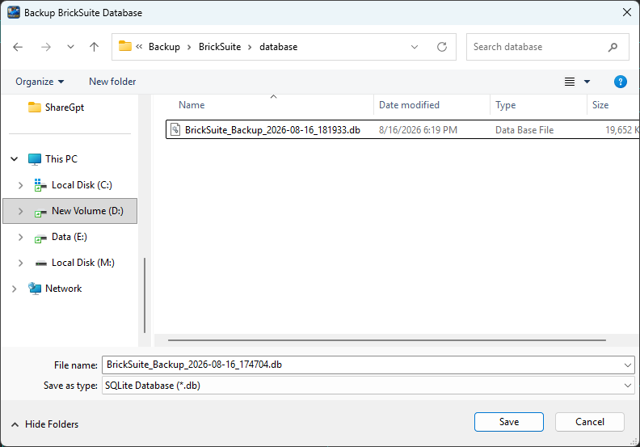
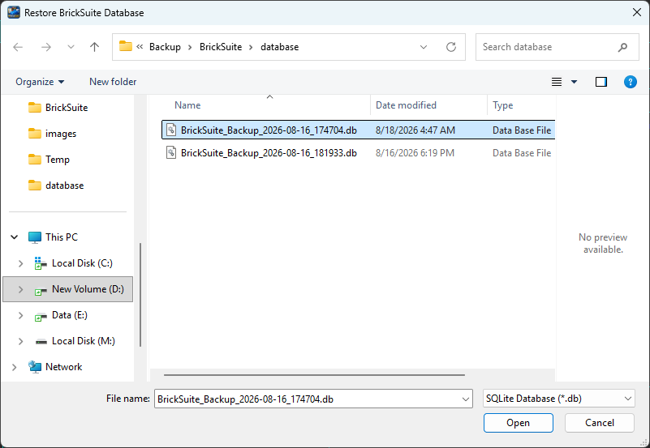
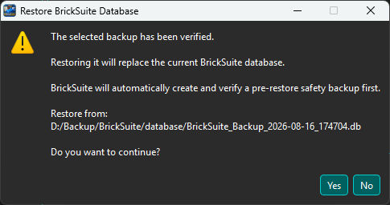
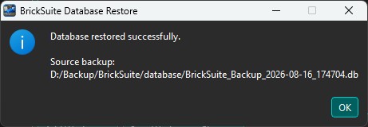

Manual Backup is the explicit preservation workflow and remains independent of the automatic-backup policy. Automatic retention never removes manual files.
Under Settings → Database Backup, select a backup root, frequency, retained count, and enable scheduling. Policy changes take effect only after Apply or OK. Recognized backups are stored beneath <backup root>/v<schema version>, keeping different database formats separate.
Before Backup Now or a scheduled attempt, a worker-owned database connection consumes the full integrity_check and foreign_key_check results. A healthy source proceeds to SQLite snapshot creation; the snapshot is then reopened and verified before publication. Only after all of those stages pass may retention remove older recognized automatic backups.
Backup Now uses this same health and verification pipeline. It works while scheduling is disabled and bypasses the scheduled failure retry gate, but it does not enable scheduling.
Open Tools → Database Status & Integrity and the Application Log for details.



BrickSuite verifies a backup before restoration. Restore currently requires the backup schema version to exactly match the running application's schema version; older or otherwise mismatched schemas are rejected rather than silently migrated.
Database Status & Integrity | Settings | Application Log | Troubleshooting